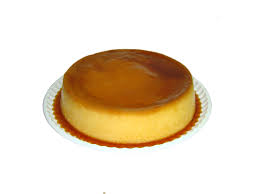
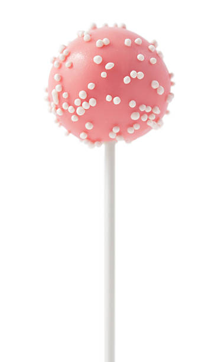
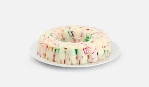

|
Pastel de Chocolate
- 1 1/2 Barras de Mantequilla a temperatura ambiente (90 g c/u)
- 1 Lata de Leche Condensada LA LECHERA
- 3 Huevos
- 1 1/2 Tazas de Harina de trigo
- 1 Cucharadita de Polvo para hornear
- 1 1/2 Barras de Chocolate semiamargo fundido (150 g c/u)
- 3 Envases de Media Crema NESTLÉ® (190 g c/u)
- 3 Barras de Chocolate semiamargo en trozos (150 g c/u).
|
Como preparar
- Horno precalentado a 180 °C.
- Para el pastel, acrema la mantequilla; agrega la Leche Condensada LA LECHERA®, los huevos, la harina, el polvo para hornear y 1 ½ barras de chocolate fundido. Vierte la preparación en un molde para pastel previamente engrasado y enharinado y llena hasta ¾ partes, hornea a 180 °C por 30 a 40 minutos o hasta que al introducir un palillo salga limpio. Retira del horno y deja enfriar.
- Para el betún, calienta la Media Crema NESTLÉ® y las 3 barras de chocolate picado hasta que se funda; retira del fuego y refrigera 2 horas o hasta que esté firme. Bate el betún en una batidora y reserva.
Sirve
- 4.Desmolda el pastel y corta en tres capas. Coloca un poco de betún en la base, una tapa de pastel, betún y la parte restante de pastel; cubre el pastel con el resto del betún, refrigera por 30 minutos y ofrece.
|
|  |
Flan de Napolitano
- 3/4 De taza de azúcar refinada
- 1 Lata de Leche Condensada LA LECHERA
- 1 Lata de Leche Evaporada CARNATION
- 1 Paquete de queso crema a temperatura ambiente (190 g)
- 5 Huevos
- 1 Cucharada de esencia de vainilla
|
Como preparar
- Horno precalentado a 180 °C.
- Vierte el azúcar en una flanera y calienta a fuego medio para que se forme el caramelo; ladea con cuidado el molde para cubrir la superficie y las paredes.
- Licúa la Leche Condensada LA LECHERA® con la Leche Evaporada CARNATION® CLAVEL®, el queso crema, los huevos y la esencia de vainilla. Vierte la preparación en la flanera y tapa con papel aluminio sellando las orillas. Coloca en un recipiente y cocina a baño María en el horno a 180 °C durante 1 1/2 horas.
- Retira del fuego y deja enfriar por completo; desmolda y sirve.
|
|
Donas cubiertos de chocolate
- 2 Piezas Huevo
- 3 Cucharadas Azúcar
- 2 Cucharadas Esencia de vainilla
- 2 Cucharadas Esencia de naranja
- 1/2 Barra Mantequilla a temperatura ambiente (90 g)
- 1 Taza Puré de papa en horjuelas, preparado con 300 ml de leche, 2 cucharadas de vainilla y 1 cucharada de mantequilla
- 3 1/2 Tazas Harina para hot cakes
- 2 Cucharadas Polvo para hornear
- 1/4 Taza Harina de trigo la necesaria para espolvorear
- 1 Taza Aceite de maíz para freír
- 1/3 Taza Media Crema NESTLÉ®
- 1 Barra Chocolate para mesa ABUELITA® (200 g)
|
Como preparar
- Bate los huevos con la mantequilla, el azúcar, la esencia de vainilla y la esencia de naranja, añade el puré de papa preparado y mezcla hasta integrar. Agrega poco a poco la harina de hot cakes previamente mezclada con el polvo para hornear y continúa batiendo hasta formar una pasta.
- En una mesa enharinada extiende la masa hasta obtener un grosor de 2 cm; corta círculos de 8 cm y luego, con un cortador pequeño, quita el centro para dar forma a las donas. Fríelas en el aceite caliente a fuego bajo para que se cuezan por dentro y se doren ligeramente; retira y escúrrelas sobre papel absorbente.
- Mezcla la Media Crema NESTLE® con el Chocolate ABUELITA® para Mesa y funde a baño María hasta que se disuelva por completo; deja enfriar ligeramente, pasa las donas por el chocolate para cubrirlas de un lado y ofrece.
|
|  |
Cake pop
- 200 g de bizcocho frío
- 100 g de crema, de mantequilla o de queso crema
- 100 g de chocolate negro
- 100 g de chocolate blanco
- Virutas de colores, fideos de chocolate... para decorar
|
Como Preparar
- Desmigamos el bizcocho
- Añadimos la crema y mezclamos bien
- Cuando tengamos una textura perfecta para hacer bolas reservamos
- Hacemos bolas de unos 20 gramos y refrigeramos
- Bañamos los palitos en chocolate fundido y pinchamos cada bolita hasta la mitad, volvemos a refrigerar
- Derretimos el chocolate restante, bañamos con él cada bolita, retiramos el exceso de chocolate y colocamos sobre papel vegetal
- Decoramos con virutas de colores
- Refrigeramos, decoramos con el chocolate sobrante y refrigeramos hasta el momento de consumir
|
|  |
Gelatina de Mosaico
- 1 Paquete de Gelatina sabor a uva (25 g)
- 1 Paquete de Gelatina sabor a fresa (25 g)
|